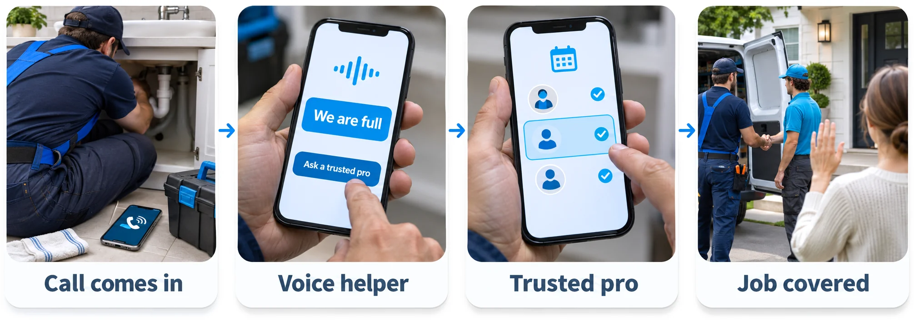
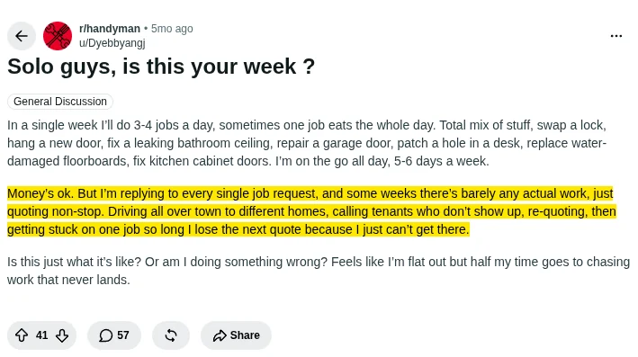

Borrow My Schedule




- Problem
- When my day is full or runs long, I lose the next customer.
- Who has it
- Providers with a full week, or a day that keeps running over.
- What people say
- “getting stuck on one job so long I lose the next quote because I just can't get there” Solo handyman on Reddit, r/handyman, 2026-06-19

Open the post